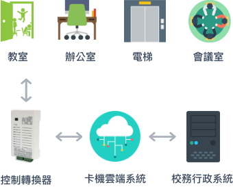
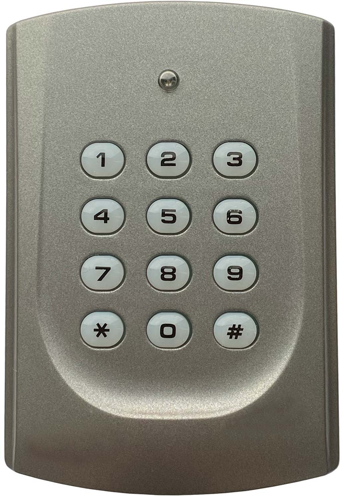
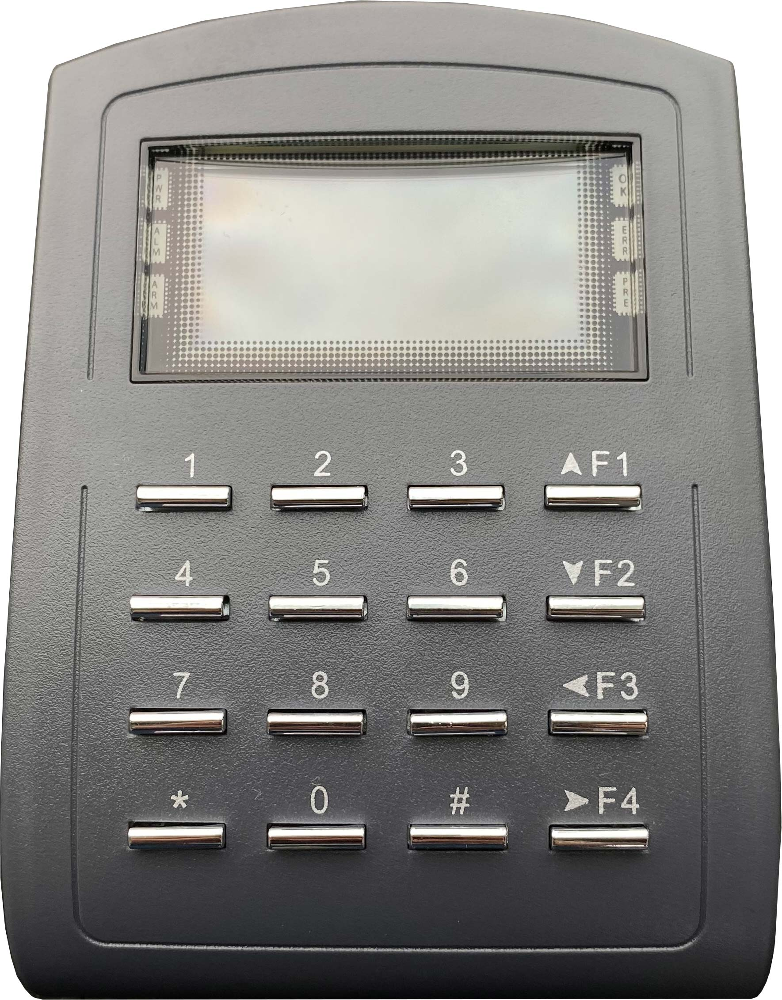
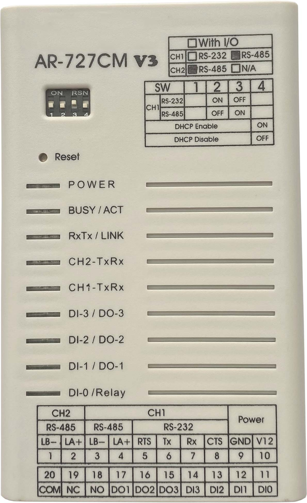
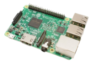
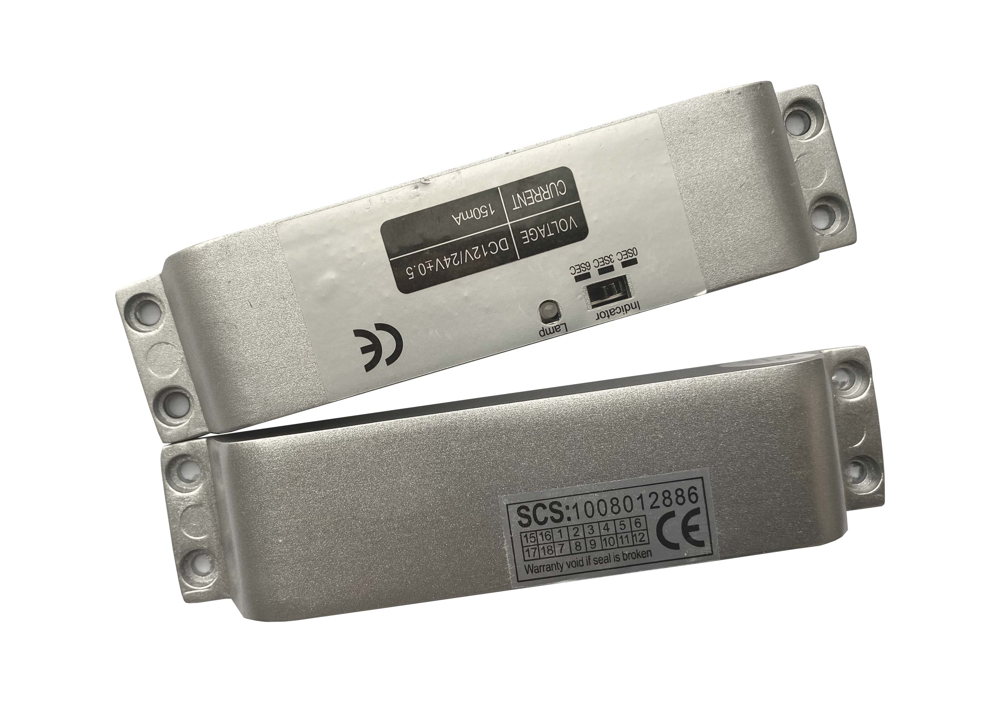

設計說明
Design Concept
適用校園的門禁系統，師生搭配學生證/職員證即可通行。由校務系統來控制校園出入、遠端開門、電梯使用權限等，並有效管理校內教室及場地，提升校園安全。
亦提供客製化製卡、門禁設備安裝、門禁與系統整合應用、各縣市機關之卡片管理系統平台設計開發等服務。
亦提供客製化製卡、門禁設備安裝、門禁與系統整合應用、各縣市機關之卡片管理系統平台設計開發等服務。

使用控制轉換器，將各處室刷卡資料與電腦系統設定權限相互傳送。
功能特色
System Features

課表結合
連動校務系統的課表，系統自動預約上課教室，上課可持數位證開啟教室門。

E卡通行
可支援多元卡種，持數位證就能通行已設定的出入口。

校園安全
凡走過必留下痕跡，通行人員將會在系統記錄通行時間，管控校園安全。

電梯管制
可設定搭乘師生或行動不便者臨時搭乘，有效管控電梯使用量及電量，有效節能環保。
資安保障
若有人員異動離校需停用權限，設定後便關閉卡片所有通行權。

APP連動
與校務APP整合，連結場地預約管理、出入管理，還可用APP遠端開門。
軟體功能
Software Features
 此圖為刷卡紀錄系統
此圖為刷卡紀錄系統
場地預約
- 場地預約借用 線上登記預約使用場地
- 通行記錄查詢 可隨時查看通行記錄
- 通行設定 可設定永久通行人員、禁止通行人員
單位人事製卡
- 手動開卡/停卡 通行卡片遺失時可進行卡片補發
- 卡片補登 將新辦的卡片資料匯入系統
請假管理
- 出缺席記錄 藉由卡片感應完成上學/放學點名統計
校園出入管理
- 學生出入紀錄 可按照學生姓名、座號或學號查詢進出刷卡記錄
- 上下學時間設定 可依班級類別設定上下學時間
硬體設備
Hardware Equipment
(實際使用設備依現場狀況而定)

數位門禁讀卡機(輕巧型)

數位門禁讀卡機(按鍵型)

數位門禁讀卡機(液晶顯示型)

TCP/IP 控制轉換器

網路控制器

陽極鎖

磁力鎖
施工期程
During Construction
網路及電源施工

讀卡機及門鎖安裝

系統建置及開通

上線使用
工作天數約 20~30 個工作天
詳細天數以場勘後工班依現場狀況的報告為主
各校使用見證
客戶實例
Customer Experience
新北市中正國小
新北市江翠國小
新北市新莊國小
新北市龍埔國小
新北市海山國小
新北市興仁國小
新北市板橋國小
新北市裕民國小
新北市新北高工
新北市頂埔國小
新北市中和高中
新北市新店國小
新北市雙溪高中
新北市忠義國小
新北市教育研究發展中心
桃園市中福國小
桃園市瑞塘國小
桃園市體育局運動中心
桃園市私立康萊爾雙語中小學
台中市潭陽國小
南投市旭光高中
南投市草屯國中
台南市新進國小
型錄下載
Download
與我聯繫
Contact us